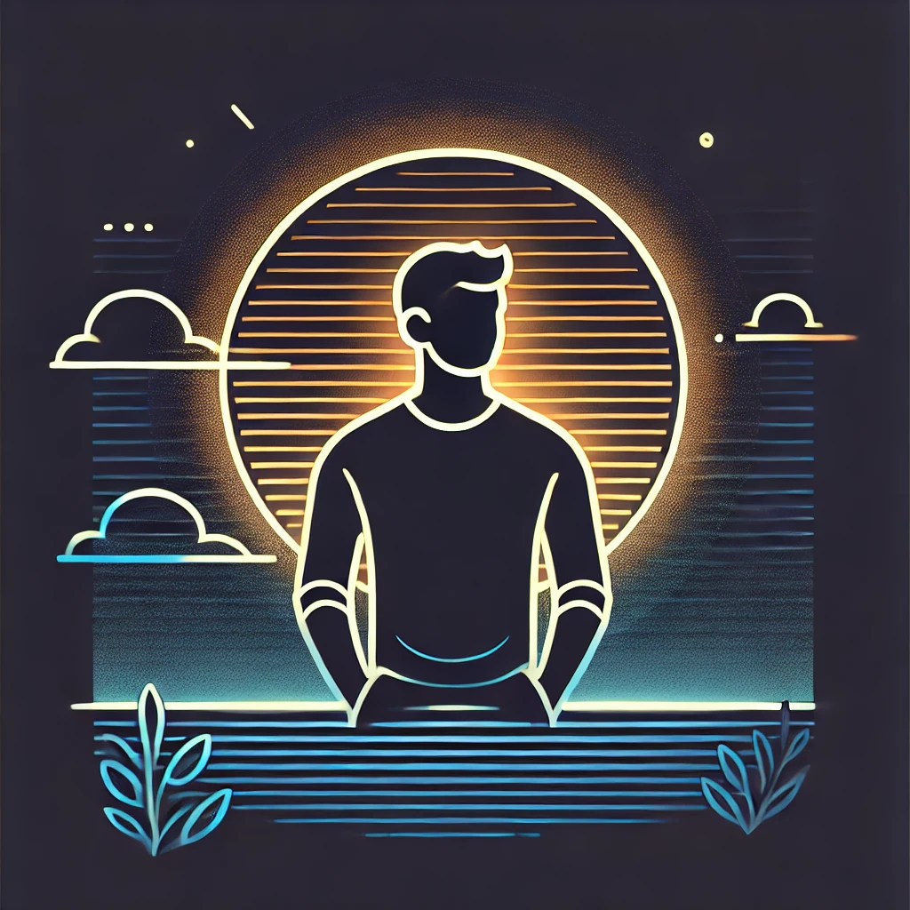

The Future of Sun Gazing: Trends and Innovations in Solar Wellness
As we move into the future, sun gazing is evolving with new trends and innovations that integrate modern science, technology, and wellness practices. This comprehensive article explores the future of sun gazing, examining emerging trends, scientific advancements, and innovations that are shaping the practice of solar wellness.
## The Resurgence of Sun Gazing
### Historical Context
Sun gazing has been practiced for thousands of years by various cultures, each recognizing the sun's vital role in sustaining life and promoting health.
#### Ancient Civilizations
1. **Ancient Egypt**: The Egyptians worshipped Ra, the sun god, and incorporated sun gazing into their spiritual and healing practices.
2. **Ancient Greece**: Greek physicians, including Hippocrates, advocated for the therapeutic use of sunlight to treat various ailments and boost vitality.
3. **Mesoamerican Cultures**: The Mayans and Aztecs integrated sun gazing into their religious practices, viewing the sun as a vital force for energy and life.
### Modern Revival
In recent decades, sun gazing has gained renewed interest, driven by the wellness movement and the teachings of figures like Hira Ratan Manek, who promoted its benefits for physical, mental, and spiritual health.
## Emerging Trends in Sun Gazing
### Integration with Modern Wellness Practices
Sun gazing is increasingly being integrated with other wellness practices to enhance its benefits and appeal to a broader audience.
#### Yoga and Meditation
1. **Sun Salutations**: Incorporating sun gazing into yoga routines, particularly during Surya Namaskar (Sun Salutation), to enhance physical and mental well-being.
2. **Mindfulness Meditation**: Combining sun gazing with mindfulness meditation to deepen the connection with the present moment and promote relaxation.
#### Holistic Health
1. **Complementary Therapies**: Integrating sun gazing with complementary therapies such as aromatherapy, sound healing, and energy healing to create a holistic wellness experience.
2. **Nutritional Support**: Emphasizing the importance of a balanced diet rich in nutrients that support overall health, including vitamins A and D, antioxidants, and omega-3 fatty acids.
### Technological Innovations
Advancements in technology are playing a significant role in the evolution of sun gazing, making the practice more accessible and safe.
#### UV Index Monitoring
1. **Apps and Wearables**: Development of apps and wearable devices that monitor UV levels in real-time, helping practitioners determine the safest times for sun gazing.
2. **Personalized Recommendations**: Technology that provides personalized recommendations based on individual skin type, geographic location, and weather conditions.
#### Virtual and Augmented Reality
1. **Virtual Sun Gazing**: Virtual reality experiences that simulate sun gazing, allowing individuals to practice in a controlled environment regardless of weather conditions or geographic limitations.
2. **Augmented Reality Guidance**: Augmented reality applications that provide real-time guidance and tips during sun gazing sessions, enhancing the overall experience.
### Scientific Research and Validation
Ongoing scientific research is crucial for validating the benefits of sun gazing and understanding its mechanisms.
#### Health Benefits
1. **Vitamin D Synthesis**: Studies exploring the role of sun gazing in boosting vitamin D production and its impact on bone health, immune function, and overall well-being.
2. **Mental Health**: Research examining the effects of sun gazing on mood, stress levels, and mental clarity, and its potential role in treating conditions like Seasonal Affective Disorder (SAD).
#### Safety and Guidelines
1. **Eye Health**: Investigating the safety of sun gazing, particularly its impact on eye health, and developing guidelines to minimize the risk of damage.
2. **Optimal Practices**: Identifying the most effective and safe practices for sun gazing, including optimal times, duration, and complementary activities.
## Innovations in Solar Wellness
### Solar-Powered Wellness Products
Innovations in solar technology are leading to the development of wellness products that harness the sun's energy.
#### Solar Lamps and Light Therapy Devices
1. **Vitamin D Lamps**: Solar-powered lamps designed to simulate sunlight exposure and boost vitamin D production, particularly useful in areas with limited natural sunlight.
2. **Light Therapy Devices**: Devices that provide light therapy to improve mood, regulate circadian rhythms, and treat conditions like SAD.
#### Solar-Charged Wearables
1. **Fitness Trackers**: Solar-charged fitness trackers that monitor physical activity, UV exposure, and overall health metrics, encouraging a balanced lifestyle.
2. **Smart Clothing**: Clothing embedded with solar panels to charge devices and monitor health parameters, promoting outdoor activity and sun exposure.
### Eco-Friendly Wellness Spaces
The future of sun gazing includes the creation of eco-friendly wellness spaces that integrate solar wellness practices.
#### Solar-Powered Retreats
1. **Sustainable Design**: Wellness retreats designed with sustainable architecture, utilizing solar panels for energy and incorporating natural light to enhance the healing environment.
2. **Holistic Programs**: Retreats offering holistic wellness programs that include sun gazing, yoga, meditation, and nutritional counseling.
#### Urban Wellness Centers
1. **Green Roofs and Gardens**: Urban wellness centers with green roofs and rooftop gardens designed for sun gazing and outdoor activities, providing a natural oasis in city environments.
2. **Community Wellness Programs**: Programs that promote solar wellness practices, offering workshops, group sessions, and educational resources on the benefits of sun gazing.
## The Role of Community and Education
### Building a Supportive Community
Community support is essential for promoting the practice of sun gazing and fostering a sense of connection among practitioners.
#### Online Platforms
1. **Social Media Groups**: Online groups and forums where practitioners can share experiences, tips, and support each other in their sun gazing journey.
2. **Virtual Workshops**: Webinars and virtual workshops led by experts, providing guidance and education on safe and effective sun gazing practices.
#### Local Groups and Events
1. **Meetups and Group Sessions**: Organizing local meetups and group sun gazing sessions to build community and enhance the practice through shared experiences.
2. **Educational Events**: Hosting educational events, such as seminars and retreats, to raise awareness about the benefits of sun gazing and provide practical guidance.
### Promoting Awareness and Education
Increasing awareness and education about sun gazing is crucial for its widespread adoption and acceptance.
#### Public Health Campaigns
1. **Awareness Campaigns**: Public health campaigns that highlight the benefits of sun gazing, safe practices, and the importance of natural sunlight for overall health.
2. **Collaborations with Health Professionals**: Partnering with healthcare providers to promote the practice of sun gazing as part of a holistic approach to wellness.
#### Research and Publications
1. **Scientific Publications**: Publishing research findings in scientific journals to validate the benefits of sun gazing and provide evidence-based guidelines.
2. **Books and Articles**: Writing books and articles that explore the history, benefits, and practices of sun gazing, making the information accessible to a wider audience.
## The Future of Sun Gazing
### Personalized Sun Gazing Practices
Advancements in technology and research are paving the way for personalized sun gazing practices that cater to individual needs and preferences.
#### Tailored Recommendations
1. **Personalized Apps**: Apps that provide tailored sun gazing recommendations based on individual health metrics, lifestyle, and goals.
2. **Customized Programs**: Developing customized sun gazing programs that integrate with other wellness practices, such as yoga, meditation, and nutrition.
### Expanding Access and Inclusivity
Ensuring that sun gazing is accessible and inclusive for all individuals is a key goal for the future.
#### Accessibility Initiatives
1. **Accessible Locations**: Creating accessible sun gazing locations and wellness centers that accommodate individuals with disabilities.
2. **Inclusive Programs**: Developing inclusive wellness programs that cater to diverse populations, promoting the benefits of sun gazing for all.
### Sustainable and Eco-Friendly Practices
Promoting sustainable and eco-friendly practices within the sun gazing community is essential for protecting the environment and enhancing the practice.
#### Eco-Friendly Products
1. **Sustainable Materials**: Using eco-friendly materials for sun gazing products and accessories, reducing environmental impact.
2. **Solar Technology**: Leveraging solar technology to create sustainable wellness products and spaces that harness the power of the sun.
#### Environmental Awareness
1. **Conservation Efforts**: Promoting environmental conservation efforts within the sun gazing community, encouraging practices that protect natural habitats and resources.
2. **Educational Programs**: Offering educational programs that raise awareness about the importance of sustainability and the role of solar wellness in protecting the environment.
## Conclusion
The future of sun gazing is bright, with emerging trends and innovations that integrate modern science, technology, and holistic wellness practices. By embracing these advancements, practitioners can enhance their sun gazing experience, maximize its benefits, and promote overall well-being. As the practice continues to evolve, it is essential to prioritize safety, sustainability, and inclusivity, ensuring that sun gazing remains a valuable and accessible wellness practice for all.
---
*Disclaimer: The information provided in this article is for educational purposes only. Sun gazing can pose risks if not done correctly. Always consult with a healthcare professional before starting any new health practice.*